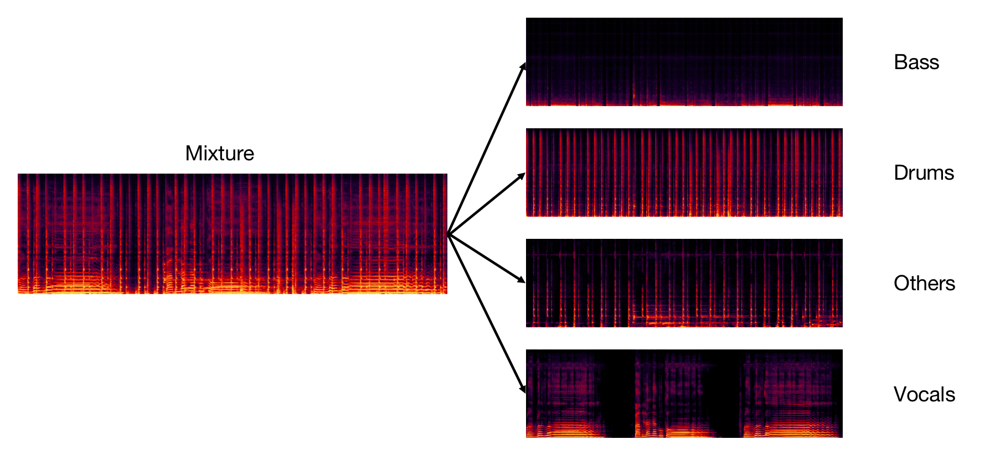
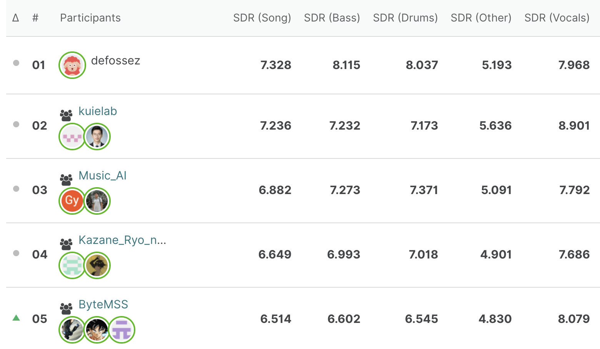
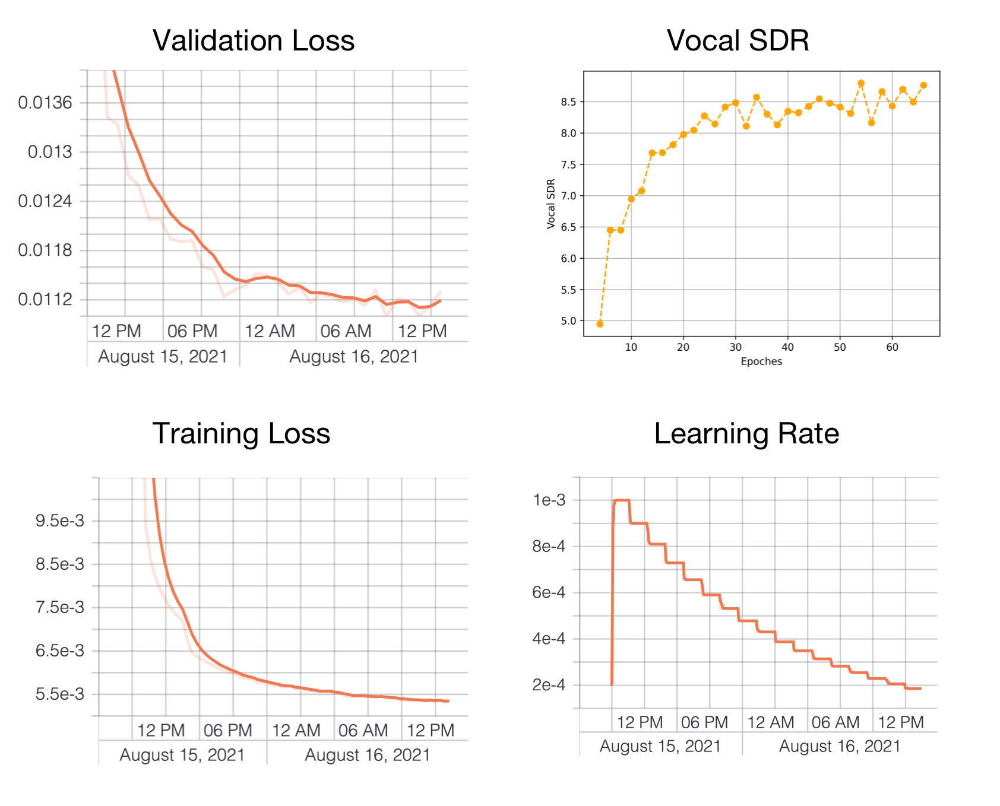

Music Source Separation with Channel-wise Subband Phase Aware ResUnet (CWS-PResUNet)¶

Introduction¶
This repo contains the pretrained Music Source Separation models I submitted to the 2021 ISMIR MSS Challenge. We only participate the Leaderboard A, so these models are solely trained on MUSDB18HQ.
You can use this repo to separate ‘bass’, ‘drums’, ‘vocals’, and ‘other’ tracks from a music mixture. Also we provides our vocals and other models’ training pipline. You can train your own model easily.
As is shown in the following picture, in leaderboard A, we(ByteMSS) achieved the 2nd on Vocal score and 5th on average score. For bass and drums separation, we directly use the open-sourced demucs model. It’s trained with only MUSDB18HQ data, thus is qualified for LeaderBoard A.

1. Usage (For MSS)¶
1.1 Prepare running environment¶
First you need to clone this repo:
git clone https://github.com/haoheliu/2021-ISMIR-MSS-Challenge-CWS-PResUNet.git
Install the required packages
cd 2021-ISMIR-MSS-Challenge-CWS-PResUNet
pip3 install --upgrade virtualenv==16.7.9 # this version virtualenv support the --no-site-packages option
virtualenv --no-site-packages env_mss # create new environment
source env_mss/bin/activate # activate environment
pip3 install -r requirements.txt # install requirements
You’d better have wget and unzip command installed so that the scripts can automatically download pretrained models and unzip them.
1.2 Use pretrained model¶
To use the pretrained model to conduct music source separation. You can run the following demos. If it’s the first time you run this program, it will automatically download the pretrained models.
python3 main -i <input-wav-file-path/folder>
-o <output-path-dir>
-s <sources-to-separate> # vocals bass drums other (all four stems by default)
--cuda # if wanna use GPU, use this flag
# --wiener # if wanna use wiener filtering, use this flag.
# '--wiener' can take effect only when separation of all four tracks are done or you separate four tracks at the same time.
# <input-wav-file-path> is the .wav file to be separated or a folder containing all .wav mixtures.
# <output-path-dir> is the folder to store the separation results
# python3 main.py -i <input-wav-file-path> -o <output-path-dir>
# Separate a single file to four sources
python3 main.py -i example/test/zeno_sign_stereo.wav -o example/results -s vocals bass drums other
# Separate all the files in a folder
python3 main.py -i example/test/ -o example/results
# Use GPU Acceleration
python3 main.py -i example/test/zeno_sign_stereo.wav -o example/results --cuda
# Separate all the files in a folder using GPU and wiener filtering post processing (may introduce new distortions, make the results even worse.)
python3 main.py -i example/test -o example/results --cuda # --wiener
Each pretrained model in this repo take us approximately two days on 8 V100 GPUs to train.
1.3 Train new MSS models from scratch¶
1.3.1 How to train¶
For the training data:
If you havn’t download musdb18hq, we will automatically download the dataset for you by running the following command.
If you have already download musdb18hq, you can put musdb18hq.zip or musdb18hq folder into the data folder and run init.sh to prepare this dataset.
source init.sh
Finally run either of these two commands to start training.
# For track 'vocals', we use a 4 subbands resunet to perform separation.
# The input of model is mixture and its output is vocals waveform.
# Note: Batchsize is set to 16 by default. Check your hard ware configurations to avoid GPU OOM.
source models/resunet_conv8_vocals/run.sh
# For track 'other', we also use a 4 subbands resunet to perform separation.
# But for this track, we did a little modification.
# The input of model is mixture, and its output are bass, other and drums waveforms. (bass and drums are only used during training)
# We calculate the losses for "bass","other", and "drums" these three sources together.
# Result shows that joint training is beneficial for 'other' track.
# Note: Batchsize is set to 16 by default. Check your hard ware configurations to avoid GPU OOM.
source models/resunet_joint_training_other/run.sh
By default, we use batchsize 8 and 8 gpus for vocal and batchsize 16 and 8 gpus for other. You can custom your own by modifying parameters in the above run.sh files.
Training logs will be presented in the mss_challenge_log folder. System will perform validations every two epoches.
Here we provide the result of a test run: ‘source models/resunet_conv8_vocals/run.sh’.

1.3.2 Use the model you trained¶
To use the the vocals and the other model you trained by your own. You need to modify the following two variables in the predictor.py to the path of your models.
41 ...
42 v_model_path = <path-to-your-vocals-model>
43 o_model_path = <path-to-your-other-model>
44 ...
1.4 Model Evaluation¶
Since the evaluation process is slow, we separate the evaluation process out as a single task. It’s conducted on the validation results generated during training.
We calculate the sdr,isr, and sar with the BSSEval v4
We calculate the sisdr value with the speechmetrics.
We calculate another version (non-windowed) of sdr, sdr_ismir, using the 2021 ISMIR MSS Challenge’s implementation.
Steps:
Locate the path of the validation result. After training, you will get a validation folder inside your loging directory (mss_challenge_log by default).
Determine which kind of source you wanna evaluate (bass, vocals, others or drums). Make sure its results present in the validation folder.
Run eval.sh with two arguments: the source type and the validation results folder (automatic generated after training in the logging folder).
For example:
# source eval.sh <source-type> <your-validation-results-folder-after-training>
# evaluate vocal score
source eval.sh vocals mss_challenge_log/2021-08-11-subband_four_resunet_for_vocals-vocals/version_0/validations
# evaluate bass score
source eval.sh bass mss_challenge_log/2021-08-11-subband_four_resunet_for_vocals-vocals/version_0/validations
# evaluate drums score
source eval.sh drums mss_challenge_log/2021-08-11-subband_four_resunet_for_vocals-vocals/version_0/validations
# evaluate other score
source eval.sh other mss_challenge_log/2021-08-11-subband_four_resunet_for_vocals-vocals/version_0/validations
The system will save the overall score and the score for each song in the result folder.
For faster evalution, you can adjust the parameter MAX_THREAD insides the evaluator/eval.py to determine how many threads you gonna use. It’s value should fit your computer resources. You can start with MAX_THREAD=3 and then try 6, 10 or 16.
2. Usage (For customizing sound source)¶
This feature allows you to separate an arbitrary sound source as long as you got enough training data.
This colab demonstrates the following procedure.
Step1: Prepare running environment.
! git clone https://github.com/haoheliu/2021-ISMIR-MSS-Challenge-CWS-PResUNet.git
# MAKE SURE SOX IS INSTALLED
#!apt-get install libsox-fmt-all libsox-dev sox > /dev/null
%cd 2021-ISMIR-MSS-Challenge-CWS-PResUNet
! pip3 install -r requirements.txt
Step2: Organize your data
I assume that you have already got the following two disjoint kinds of data (there are sample datas in this repo when you clone it):
the_source_you_want_to_get (for example, speech data)
the_source_you_want_to_remove (for example, noise data)
Split and put these data into data/your_data folder:
train(about 90%~99%): training data (used during training)
the_source_you_want_to_get: put your target source (the source you’d like to separate out) audios into this folder
the_source_you_want_to_remove: put undesired sources audios into this folder
test(about 1%~10%): testing data (used during validation, every two epoches)
the_source_you_want_to_get
the_source_you_want_to_remove
Then run:
# Automatic parsing your data
source init_your_data.sh
Step3: Start training!
Use the same MSS model
source models/resunet_conv8_vocals/run.sh
This script use 8 gpus with 8 batchsize by default. You may need to modify this run.sh to fit in your machine.
Use a smaller model (1/8)
source models/resunet_conv1_vocals/run.sh
Log file will be automatic generated. You can check validation results during training, which update every two epoches.
Hints:
To perform separation on real test data, you can upload validation data as real_mixture + silent.
To make an epoch shorter, you can modify the parameter HOURS_FOR_A_EPOCH inside models/dataloader/loaders/individual_loader.py.
3. todo¶
[✅] Open-source the training pipline (before 2021-08-20)
[✅] Write a report paper about my findings in this MSS Challenge (before 2021-10-22)
4. Reference¶
If you find our code useful for your research, please consider citing:
@inproceedings{Liu2020,
author={Haohe Liu and Lei Xie and Jian Wu and Geng Yang},
title=,
year=2020,
booktitle={Proc. Interspeech 2020},
pages={1241–1245},
doi={10.21437/Interspeech.2020-2555},
url={http://dx.doi.org/10.21437/Interspeech.2020-2555}
}.